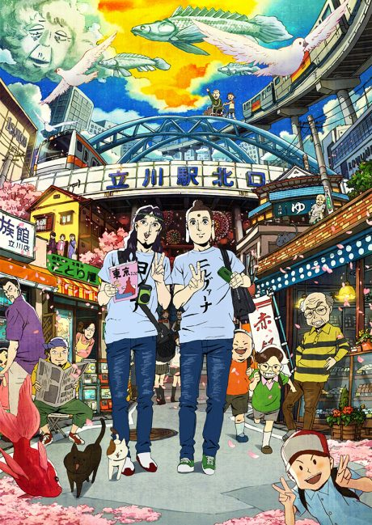
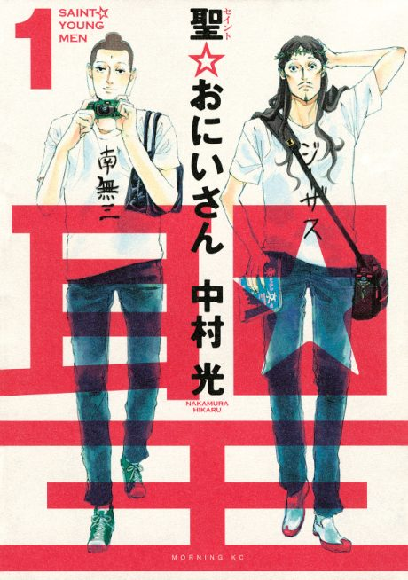

Saint☆Onii-san
聖☆おにいさん
The anime takes the story to Film.
7.5AniList score
—Animeter, no votes yet
1film
Is it worth watching?
The drop map is for series. Rate the film above to add to its Animeter score.